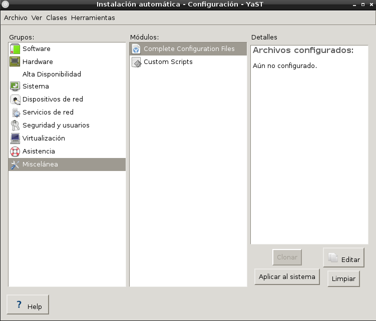
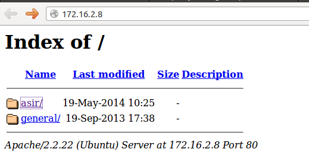
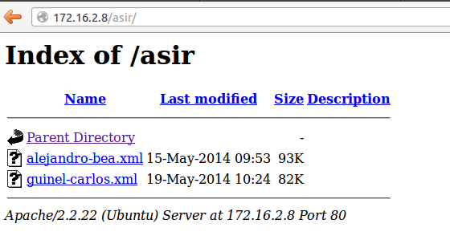

- Módulo: Sistemas Operativos
- Título del trabajo A7:Instalación desatendida
- Componentes del grupo: Alejandro García Yumar y Beatriz de Armas Salvador
- Curso Académico: 2013/2014
- Fecha de entrega: 20 de mayo de 2014
Instalar autoyast
Con una MV de OpenSuse previamente instalada, nos dispusimos a crear un archivo XML
que contuviera toda la informacíon de la inslación. Para llegar a el documento XML, era necesario instalar el AutoYast y el libxml2.

Cuando el AutoYast estuvo instalado, empezamos a clonar todas las especificaciones de la inslación del OpenSuse lo cual desembocó en la creación de un documento XML que fue el que finalmente nos permitió
proceder a la instalación desatendida.


Para poder hacer la instalación desatendida seguimos una serie de pasos clave:
Creamos una MV Nueva de OpenSuse
Copiamos el archivo XML bajo el nombre "alejandro-bea.xml" en nla Máquina Real del profesor (David Vargas) lo cual nos permitió acceder a ello para la instalación.
Y finalmente iniciamos la MV con la intención de comenzar la instalación, cambiamos el idioma y pulsamos la tecla F6, que nos da una serie de opciones, elegimos URL e introducimos "https://172.16.2.8/asir/alejandro-bea.xml".
Luego comenzamos la instalación y se produce automáticamente



La práctica no fué complicada, al principio se nos complicó la busqueda de información pero finalmente conseguimos el objetivo.